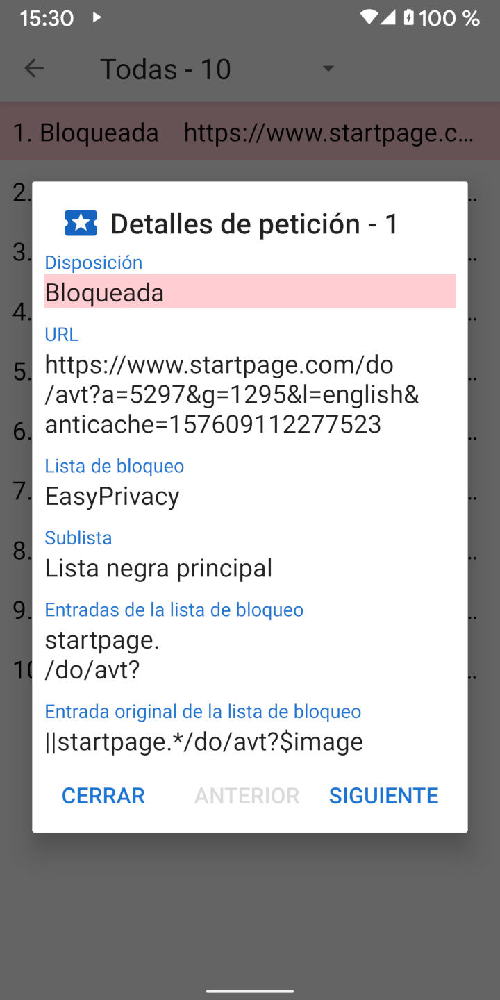

Cuando se carga una URL, normalmente realiza una serie de peticiones de recursos para CCS, JavaScript, imágenes y otros archivos. Los detalles sobre estas solicitudes se pueden ver en la Actividad de peticiones. El cajón de navegación tiene un enlace a la Actividad de peticiones y también muestra cuántas órdenes se bloquearon. Al tocar una solicitud se muestran los detalles de por qué se ha permitido o bloqueado.
Navegador Privado incluye cuatro listas de filtros comunes basados en la sintaxis de Adblock: EasyList, EasyPrivacy, Lista molesta de Fanboy, y Lista de bloqueo social de Fanboy. Navegador Privado procesa estas listas de filtros en las 22 sublistas siguientes que comprueban las solicitudes de recursos en el orden indicado.
Las listas iniciales se comparan con el principio de la URL. Las listas finales se comparan con el final de la URL. Las listas de dominios sólo se comparan con ciertos dominios. Las listas de terceras partes sólo se aplican si el dominio raíz de la solicitud es diferente del dominio raíz de la URL principal. Las listas de expresiones regulares siguen la sintaxis de las expresiones regulares. Cada elemento de la sublista tiene una o más entradas. En el caso de sublistas de dominio, la solicitud de recurso sólo se compara con el artículo si la primera entrada coincide con el dominio de la URL principal.
Debido a las limitaciones de WebView de Android, y para acelerar el procesamiento de las solicitudes, Privacy Browser implementa una interpretación simplificada de la sintaxis de Adblock. Esto a veces puede dar lugar a falsos positivos, en los que se permiten o bloquean recursos de formas que no estaban previstas en la entrada original. Encontrará una descripción más detallada de cómo se procesan las entradas de la lista de filtros en stoutner.com.
Navegador Privado dispone de tres listas de filtros adicionales.
UltraList y
UltraPrivacy
filtra anuncios y rastreadores que EasyList y EasyPrivacy no filtran. El tercero bloquea todas las solicitudes de terceros.
Una solicitud sólo se considera de terceros si el dominio base de la solicitud es diferente del dominio base de la URL.
Por ejemplo, si www.website.com carga una imagen desde images.website.com,
ésta no se bloquea como petición de terceros porque ambos comparten el mismo dominio base de website.com.
Bloquear todas las solicitudes de terceros aumenta la privacidad, pero esta lista de filtros está desactivada por defecto porque rompe un gran número de sitios web.